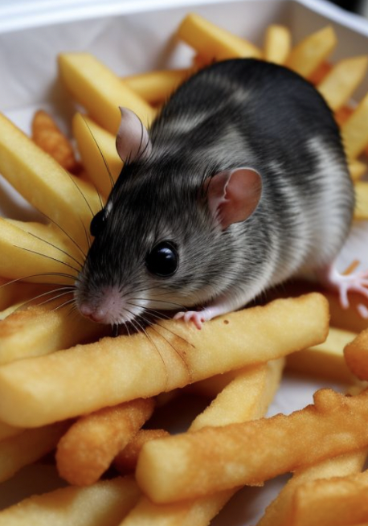

Disinformation Campaign
due Oct 25Part I
Please take this deepfake detection quiz and submit a screenshot of your results.
Part II: Finish corpus
Work with your group from class to finish consolidating found text to work with. It can be anything, but you will need to be able to explain where the text came from and in total, you will need at least 1000 words (the more the better). Put all of your text in one file.
Part II: Disinformation Campaign (credit to Daniel Stanford)
Step 1 (Choose one):1. Use a large language model to write a compelling (potentially persuasive) article on a false claim, that could be used as part of a disinformation campaign. For example: Create a 300 to 400-word article that explains why vaccines cause autism. Include links to at least two sources to support specific claims.
2. Use a text-to-image model to generate a compelling fake photograph to support a false claim that could be used as part of a disinformation campaign. For example:
 “Mouse found in fries in a Brooklyn MacDonald’s”Links to text generator models you could use:
Links to text-to-image models you could use:
- Google Gemini
- Perchance
- Dall-E Mini
- The one embedded in instagram
- The one embedded in photoshop
Step 2
Write a couple of sentences responding to one or more of the following reflecting questions: Did the AI tool hesitate to answer your question? If so, how did you get around this? What strategies within the AI-generated text might help the message be compelling and more likely to be shared? (E.g., correlation as implied causation, appeals to emotion, credibility through association, repetition, confirmation bias, etc.) Did the sources the AI tool referenced seem credible? Why or why not?
Instructions for submission
- Submit your quiz result screenshot in the #assignments channel
- Submit your disinformation text/image in the #assignments channel and your reflection sentences.